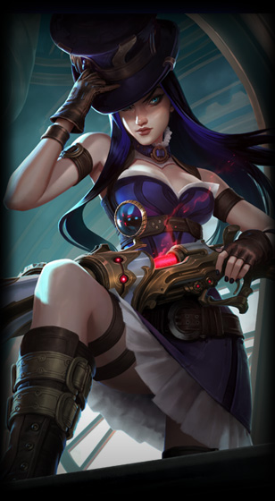

Caitlyn "Der Cheriff von Piltover"
Informationen über Caitlyn
Caitlyn ist ein sehr starker Champion. Der mit seiner hohen Reichweite und Schaden punkten kann, durch ihre Fähigkeiten kann sie ihre Gegner in sicherer Entfernung durchlöchern. Seit ihrem neuen Update kann sie bis zu fünf Fallen legen, wenn ein Gegner in diese läuft wir der festgehalten und Caitlyn bekomt ihre Passive "Headshot", diese gibt ihrem nächsten automatischen Angriff einen erheblichen Bonusschaden der auch einen kritischen Treffer auslösen kann. Mit ihrer ultimativen Fähigkeit kann sie auf einer großen Distanz einen gezielten Schuss abfeuern, dem man nicht ausweichen kann.
Wenn man Gegen sie spielt sollte man darauf achten nicht in die Fallen zu laufen, weil diese einen erheblichen Schaden verursachen, wenn sie in der Nähe ist. Berbündete sollte versuchen ihre ultimative Fähigkeit mit ihrem Körper zu blockieren, weil diese nur eine Einheit treffen kann. Ebenfalls ist sie nicht mobil und kann deshalb schlecht vor anderen weglaufen im Gegensatz zu Ezreal.
Was macht Caitlyn so stark?
Caitlyn ist durch ihre Passive "Headshot" so stark. Diese kann eine so großen Schaden verursachen das der Gegner beim ersten Schuss stirbt, außerdem kann sie, wenn richtig positioniert, denn Teamfight in kürzester zeit für sich entscheiden, weil keiner gegen ihren Schaden lange durchhält.Wichtige Items auf Caitlyn
-
 Runaan's Hurricane
Runaan's Hurricane -
 Klinge der Unendlichkeit
Klinge der Unendlichkeit -
 Blutdürster
Blutdürster -
 Berserkers
Berserkers -
 Lord Dominik's Regards
Lord Dominik's Regards -
 Statikk Shiv
Statikk Shiv